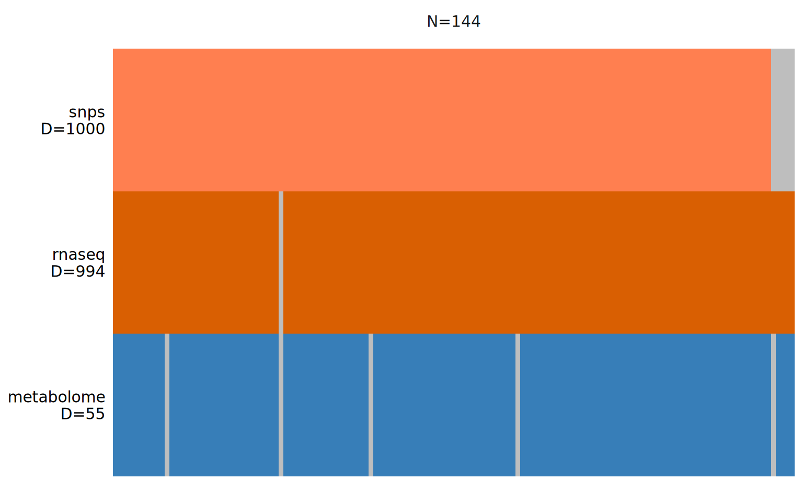
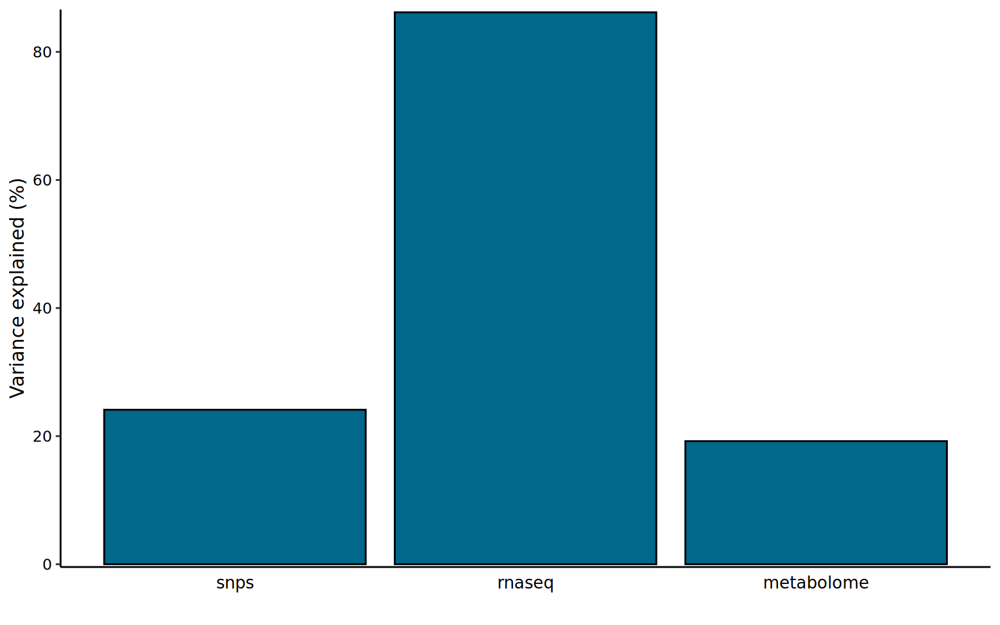
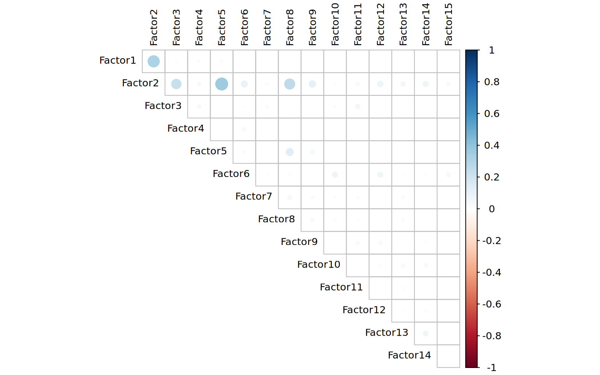
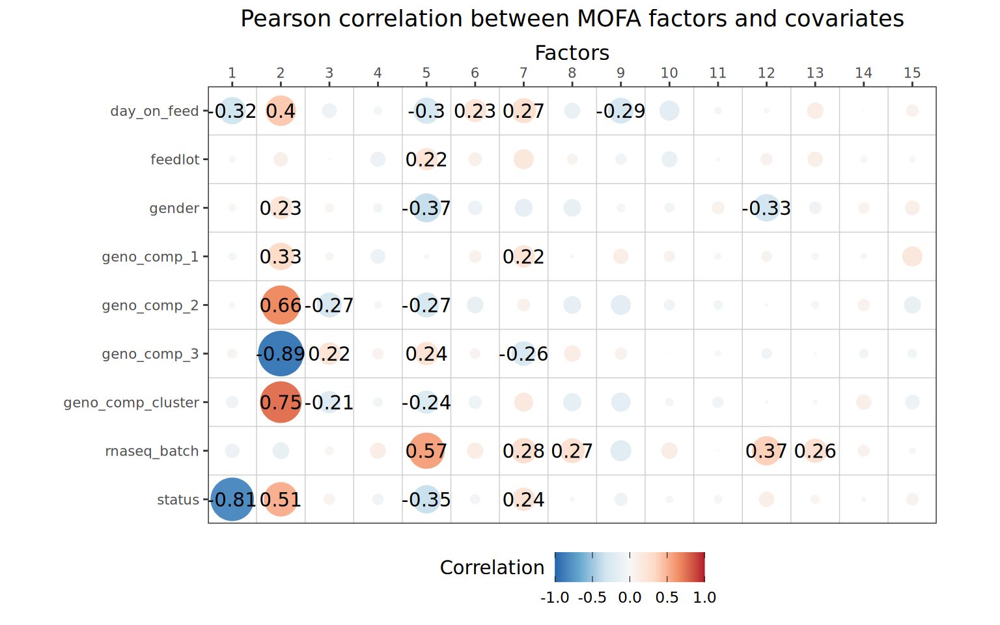
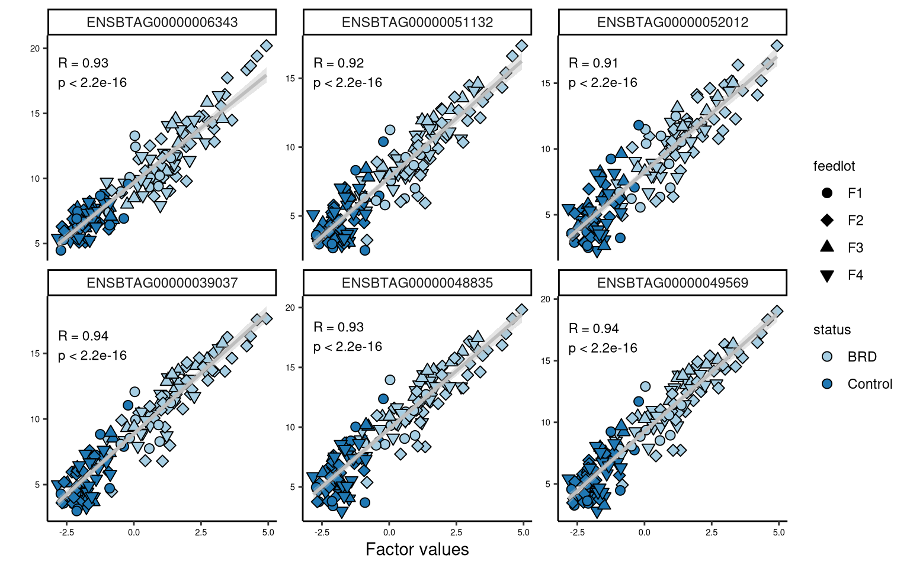

9 Integration with MOFA
Now that the omics datasets have been appropriately pre-processed and pre-filtered, we are ready to perform the actual data integration step. In this chapter, we will show how to perform multi-omics data integration with the MOFA method from the MOFA2 package.
As a reminder, here is what the _targets.R script should look like so far:
_targets.R script
library(targets)
library(tarchetypes)
library(moiraine)
tar_option_set(
packages = c(
"moiraine",
"MOFA2",
"mixOmics",
"readr",
"tibble",
"tidyr",
"dplyr",
"ggplot2",
"patchwork"
)
)
list(
# Importing data ---------------------------------------------------------------
## Data import using a target factory
import_dataset_csv_factory(
files = c(
system.file("extdata/genomics_dataset.csv", package = "moiraine"),
system.file("extdata/transcriptomics_dataset.csv", package = "moiraine"),
system.file("extdata/metabolomics_dataset.csv", package = "moiraine")
),
col_ids = c("marker", "gene_id", "sample_id"),
features_as_rowss = c(TRUE, TRUE, FALSE),
target_name_suffixes = c("geno", "transcripto", "metabo")
),
## Genomics features metadata file
tar_target(
fmetadata_file_geno,
system.file("extdata/genomics_features_info.csv", package = "moiraine"),
format = "file"
),
## Genomics features metadata import
tar_target(
fmetadata_geno,
import_fmetadata_csv(
fmetadata_file_geno,
col_id = "marker",
col_types = c("chromosome" = "c")
)
),
## Metabolomics features metadata import
import_fmetadata_csv_factory(
files = c(
system.file("extdata/metabolomics_features_info.csv", package = "moiraine")
),
col_ids = c("feature_id"),
target_name_suffixes = c("metabo")
),
## Transcriptomics features metadata import
import_fmetadata_gff_factory(
files = system.file("extdata/bos_taurus_gene_model.gff3", package = "moiraine"),
feature_types = "genes",
add_fieldss = c("Name", "description"),
target_name_suffixes = "transcripto"
),
## Samples metadata import
import_smetadata_csv_factory(
files = system.file("extdata/samples_info.csv", package = "moiraine"),
col_ids = "animal_id",
target_name_suffixes = "all"
),
## Creating omics sets for each dataset
create_omics_set_factory(
datasets = c(data_geno, data_transcripto, data_metabo),
omics_types = c("genomics", "transcriptomics", "metabolomics"),
features_metadatas = c(fmetadata_geno, fmetadata_transcripto, fmetadata_metabo),
samples_metadatas = c(smetadata_all, smetadata_all, smetadata_all)
),
## Creating the MultiDataSet object
tar_target(
mo_set,
create_multiomics_set(
list(set_geno,
set_transcripto,
set_metabo)
)
)
# Inspecting the `MultiDataSet` object -----------------------------------------
## Creating a density plot for each dataset
tar_target(
density_plots,
plot_density_data(
mo_set,
combined = FALSE,
scales = "free"
)
),
## Plotting the relationship between features mean and standard deviation
## for each dataset
tar_target(
mean_sd_plots,
plot_meansd_data(mo_set)
),
## Assessing missing values
tar_target(
n_missing_values,
check_missing_values(mo_set)
)
# Modifying the `MultiDataSet` object ------------------------------------------
## RNAseq differential expression results file
tar_target(
rnaseq_de_res_file,
system.file(
"extdata/transcriptomics_de_results.csv",
package = "moiraine"
),
format = "file"
),
## Reading the RNAseq differential expression results
tar_target(
rnaseq_de_res_df,
read_csv(rnaseq_de_res_file) |>
rename(feature_id = gene_id) |>
mutate(dataset = "rnaseq")
),
## Adding the differential expression results to the MultiDataSet object
tar_target(
mo_set_de,
add_features_metadata(mo_set, rnaseq_de_res_df)
)
# Data pre-processing ----------------------------------------------------------
## Applying transformations to the datasets
transformation_datasets_factory(
mo_set_de,
c("rnaseq" = "vst-deseq2",
"metabolome" = "logx"),
log_bases = 2,
pre_log_functions = zero_to_half_min,
transformed_data_name = "mo_set_transformed"
),
## Density plot for each transformed dataset
tar_target(
density_plots_transformed,
plot_density_data(
mo_set_transformed,
combined = FALSE,
scales = "free"
)
),
## Plotting the mean-SD trend for transformed each dataset
tar_target(
mean_sd_plots_transformed,
plot_meansd_data(mo_set_transformed)
),
## Summary table of the transformations applied
tar_target(
transformation_summary,
get_table_transformations(transformations_runs_list)
),
## Running a PCA on each dataset
pca_complete_data_factory(
mo_set_transformed,
complete_data_name = "mo_set_complete"
),
## PCA screeplots
tar_target(
pca_screeplots,
plot_screeplot_pca(pca_runs_list)
),
## PCA sample plots
tar_target(
pca_sample_plots,
plot_samples_coordinates_pca(
pca_runs_list,
datasets = "snps",
pcs = 1:3,
mo_data = mo_set_de,
colour_upper = "geno_comp_cluster",
shape_upper = "status",
colour_lower = "feedlot"
)
)
# Dataset pre-filtering --------------------------------------------------------
## Unsupervised feature selection based on MAD score
feature_preselection_mad_factory(
mo_set_complete,
to_keep_ns = c("snps" = 1000, "rnaseq" = 1000),
with_ties = TRUE,
filtered_set_target_name = "mo_presel_unsupervised"
),
## Diagnostic plot for MAD-based feature selection
tar_target(
preselection_mad_plot,
plot_feature_preselection_mad(individual_mad_values)
),
## Supervised feature selection based on bruising groups
feature_preselection_splsda_factory(
mo_set_complete,
group = "status",
to_keep_ns = c("snps" = 1000, "rnaseq" = 1000),
filtered_set_target_name = "mo_presel_supervised"
),
## Diagnostic plot for sPLS-DA based feature selection
tar_target(
preselection_splsda_plot,
plot_feature_preselection_splsda(individual_splsda_perf)
)
# Integration with sPLS --------------------------------------------------------
## Creating sPLS input
tar_target(
spls_input,
get_input_spls(
mo_presel_supervised,
mode = "canonical",
datasets = c("rnaseq", "metabolome")
)
),
## Initial PLS run with no feature selection and large number of components
tar_target(
spls_novarsel,
spls_run(
spls_input,
ncomp = 4
)
),
## Cross-validation for number of components
tar_target(
spls_perf_res,
mixOmics::perf(
spls_novarsel,
validation = "Mfold",
folds = 10,
nrepeat = 10,
cpus = 3
)
),
## Plotting cross-validation results (for number of components)
## Can try criterion = 'Q2.total', 'cor.tpred', 'cor.upred', 'RSS.tpred',
## 'RSS.upred' (but avoid 'RSS' and 'PRESS')
tar_target(
spls_perf_plot,
plot(spls_perf_res, criterion = "Q2.total")
),
## Selected value for ncomp
tar_target(
spls_optim_ncomp,
spls_get_optim_ncomp(spls_perf_res, min_ncomp = 2)
),
## Cross-validation for number of features to retain
tar_target(
spls_tune_res,
spls_tune(
spls_input,
ncomp = spls_optim_ncomp,
keepX = seq(10, 100, 10),
keepY = seq(10, 100, 10),
validation = "Mfold",
folds = 10,
nrepeat = 5,
measure = "cor",
cpus = 3
)
),
## Plotting cross-validation results (for number of features)
tar_target(
spls_tune_plot,
spls_plot_tune(spls_tune_res)
),
## Final sPLS run
tar_target(
spls_final_run,
spls_run(
spls_input,
ncomp = spls_optim_ncomp,
keepX = spls_tune_res$choice.keepX,
keepY = spls_tune_res$choice.keepY
)
)
# Integration with sO2PLS ------------------------------------------------------
## Creating sO2PLS input
tar_target(
omicspls_input,
get_input_omicspls(
mo_presel_supervised,
datasets = c("rnaseq", "metabolome")
)
),
## Adjusted cross-validation for number of components
tar_target(
so2pls_cv_adj,
so2pls_crossval_o2m_adjR2(
omicspls_input,
a = 1:5,
ax = seq(0, 10, by = 2),
ay = seq(0, 10, by = 2),
nr_folds = 10,
nr_cores = 6,
seed = 127
)
),
tar_target(
so2pls_cv_adj_res,
so2pls_get_optim_ncomp_adj(so2pls_cv_adj)
),
## Plotting adjusted cross-validation results
tar_target(
so2pls_cv_adj_plot,
so2pls_plot_cv_adj(so2pls_cv_adj)
),
## Standard cross-validation for number of components
tar_target(
so2pls_cv,
so2pls_crossval_o2m(
omicspls_input,
so2pls_cv_adj,
nr_folds = 10,
nr_cores = 6,
seed = 356
)
),
tar_target(
so2pls_cv_res,
so2pls_get_optim_ncomp(so2pls_cv)
),
## Plotting standard cross-validation results
tar_target(
so2pls_cv_plot,
so2pls_plot_cv(so2pls_cv)
),
## Cross-validation for sparsity parameters
tar_target(
so2pls_cv_sparsity,
so2pls_crossval_sparsity(
omicspls_input,
n = so2pls_cv_res["n"],
nx = so2pls_cv_res["nx"],
ny = so2pls_cv_res["ny"],
nr_folds = 10,
keepx_seq = c(seq(5, 30, 5), seq(40, 100, 10)),
keepy_seq = c(seq(5, 40, 5))
)
),
tar_target(
so2pls_cv_sparsity_res,
so2pls_get_optim_keep(so2pls_cv_sparsity)
),
## Plotting the results of the cross-validation for the number of features
## to retain from each dataset for the different joint components
tar_target(
so2pls_cv_sparsity_plot,
so2pls_plot_cv_sparsity(so2pls_cv_sparsity)
),
## Extracting sparsity results in table format
tar_target(
so2pls_cv_sparsity_table,
so2pls_print_cv_sparsity(so2pls_cv_sparsity_res)
),
## Final sO2PLS run
tar_target(
so2pls_final_run,
so2pls_o2m(
omicspls_input,
so2pls_cv_res,
so2pls_cv_sparsity_res
)
),
## Summary plot of percentage of variance explained
tar_target(
so2pls_summary_plot,
so2pls_plot_summary(so2pls_final_run)
),
## Screeplot
tar_target(
so2pls_screeplot,
so2pls_screeplot(so2pls_final_run)
),
## Comparison of samples score for joint components
tar_target(
so2pls_joint_components_comparison_plot,
so2pls_compare_samples_joint_components(
so2pls_final_run,
mo_data = mo_set_de,
colour_by = "status",
shape_by = "feedlot"
)
),
## Coefficient plot for joint components
tar_target(
so2pls_joint_components_coefficients_plot,
so2pls_plot_joint_components_coefficients(so2pls_final_run)
),
## Joint component samples score plot
tar_target(
so2pls_joint_components_samples_score_plot,
so2pls_plot_samples_joint_components(
so2pls_final_run,
mo_data = mo_set_de,
colour_upper = "status",
scale_colour_upper = scale_colour_brewer(palette = "Paired"),
shape_upper = "feedlot"
) +
theme(legend.box = "vertical")
),
## Specific components samples score plot
tar_target(
so2pls_specific_components_samples_score_plot,
so2pls_plot_samples_specific_components(
so2pls_final_run,
mo_data = mo_set_de,
colour_upper = "feedlot",
scale_colour_upper = scale_colour_brewer(palette = "Paired"),
colour_lower = "rnaseq_batch",
shape_upper = "gender"
) |>
map(\(x) x + theme(legend.box = "vertical"))
)
)9.1 What is MOFA?
MOFA (for Multi-Omics Factor Analysis) is a method for the unsupervised integration of two or more omics datasets. It aims at uncovering the main axes of variations shared by all or a subset of the datasets, through the construction of a small number of latent factors. It can be assimilated to a generalisation of the PCA (Principal Components Analysis) to multiple datasets. The latent factors are constructed as sparse linear combinations of the omics features, highlighting the features that contribute to each axis of variation.
MOFA uses a Bayesian framework to decompose each dataset (referred to as “view” in the package documentation) into the product of a latent factor matrix (representing to the main axes of variation) and a matrix of feature weights (indicating the extent to which the features contribute to the different latent factors). MOFA applies two levels of sparsity. The first level of sparsity is used to detect whether a given latent factor is active (i.e. explains variation) in each dataset. This allows to assess which sources of variations are shared across the datasets. The second level of sparsity is applied to the features, allowing to assess which features contribute to each source of variation.
MOFA requires as input matrices of omics measurements that must have at least some samples in common, but accepts some samples being absent from some of the datasets. It is recommended to have at least 15 samples in common across the datasets in order to obtain sensible results. The number of features in each dataset must not be too small (i.e. at least 15). It is critical that each dataset is properly normalised, with batch effects removed. In addition, it is strongly recommended that the datasets are pre-filtered to retain highly variable features; a similar number of features should be retained across the datasets. Missing values are not a problem with MOFA. MOFA can also accept samples and features metadata as data-frames. Lastly, there is a number of parameters that can be customised. The most important ones will be mentioned in this chapter; for a complete list see the MOFA tutorial.
A characteristic of the MOFA2 package is that the model training part of the analysis is done in Python with the mofapy2 module. MOFA2 interacts with Python from R with the reticulate package. This is important to know as it might affect the installation and run depending on the environment in which it is used.
9.1.1 A note on groups in MOFA
MOFA offers the option to assign samples to groups (referred to as the multi-group framework within MOFA). It is important to understand what this does before using it. In particular, if the aim of the analysis is to find features that separate samples based on a grouping, you should not use this multi-group framework. By setting sample groups in MOFA, it will ignore sources of variations that discriminate the groups. Instead, this multi-group framework will seek sources of variations that are shared between the different groups, and sources of variations that are exclusive to a specific group. For example, in this analysis, the multi-group framework was used to split samples (cells) based on their developmental stage. The goal of the analysis was to find coordinated variation between the different datasets, and detect at which developmental stage (i.e. in which group) it occurred, rather than trying to differentiate the different developmental stages.
9.1.2 MEFISTO
MEFISTO is an extension of MOFA that explicitly accounts for some continuous structure amongst the samples, i.e. temporal or 2D spatial relationships between the observations. The constructed latent factors’ associated with the covariate is assessed, to see whether they represent smooth variation which correlates with the covariate, or whether they are independent of the covariate. The trained model can then be used to extrapolate to unseen values of the covariate (e.g. missing time-points or physical locations). When using the multi-group framework, MEFISTO can also align the values of the covariate between the different groups, for example to account for differences in developmental speed between two groups of patients.
9.2 Creating the MOFA input
The first step is to transform the MultiDataSet object into a suitable format for the MOFA2 package. This is done through the get_input_mofa() function. In addition to the MultiDataSet object, this function accepts as arguments:
datasets: a vector of dataset names that dictates which datasets from the multi-omics set should be included in the analysis (by default, all datasets are included);groups: the name of the column in the samples metadata to be used as group indicator if using the multi-group framework (if not set, the multi-group framework will not be used);options_list: a list of options to customise the MOFA model – more information below;only_common_samples: whether only the samples present in all datasets should be retained. The default value isFALSE; this argument should be set toTRUEwhen some datasets contain many more samples than others; when only a few samples are missing from some of the datasets, it is ok to leave it toFALSE.
We expand on the options that can be set with the options_list argument below.
9.2.1 MOFA parameters
MOFA has three type of parameters (referred to as options) that the user can control.
9.2.1.1 Data options
These are options for data handling when creating the MOFA model. The two important options are:
scale_views: logical, whether the datasets (views) should be scaled to unit variance. The default isFALSE, but it is recommended to set it toTRUEif the scale difference between the datasets is high.scale_groups: logical, whether to scale the groups to unit variance. Irrelevant unless using the multi-group framework. The default isFALSE, but it is recommended to set it toTRUEif the scale difference between the groups is high.
See the documentation for get_default_data_options() for a full list.
9.2.1.2 Model options
These are the options defining different aspects of the MOFA model. The most important ones are:
num_factors: The maximum number of factors to construct (note that this is a maximum, i.e. MOFA can return a lower number of factors if there is not a lot of variation in the datasets). The default is set to 15, which is a good start. This can be adjusted after running MOFA with the default value.likelihoods: Named character vector, the type of likelihood to use for each dataset. MOFA offers three options: Gaussian likelihood ('gaussian') for continuous data, Bernoulli likelihood ('bernoulli') for binary data, and Poisson likelihood('poisson')for count data. It is highly recommended to transform the datasets in order to use a Gaussian likelihood: for example, applying a variance-stabilising transformation on RNAseq data rather than using the raw read counts with a Poisson likelihood. By default, a Gaussian likelihood is chosen for all datasets.
See the documentation for get_default_model_options() for a full list.
9.2.1.3 Training options
These are the options that control how the model is trained. The most important one is:
-
seed: setting the random seed. This is standard practice, to make sure that the results are reproducible.
See the documentation for get_default_training_options() for a full list.
9.2.1.4 Passing the parameters to get_input_mofa
When creating a MOFA input object with get_input_mofa(), all options will be set to their default values. It is possible to customise the values for some of the options through the options_list parameter. This should be a named list, with up to three elements (one per type of options that MOFA accepts): data_options, model_options, and training_options. Each element is itself a named list, where each element of the list corresponds to a specific option. All three elements do not have to be present; for example, if we want to only specify a value for the model option num_factors, we can set options_list to:
If we also want to set the likelihoods and the random seed, then options_list becomes:
For our example, we’ll make sure that each dataset is scaled to unit variance, and that a Poisson likelihood is used for the genomics data, for which we have variants dosage. Since there are only 9 samples that are not present in all omics datasets, we can keep them in the analysis. We’ll set the random seed to ensure that the results are reproducible:
tar_target(
mofa_input,
get_input_mofa(
mo_presel_supervised,
options_list = list(
data_options = list(scale_views = TRUE),
model_options = list(likelihoods = c(
"snps" = "poisson",
"rnaseq" = "gaussian",
"metabolome" = "gaussian")
),
training_options = list(seed = 43)
),
only_common_samples = FALSE
)
)This will produce a warning:
#> Warning: Dataset snps is to be modelled with a poisson likelihood, but is not
#> integer. Transforming to integer.The warning informs us that we have chosen to use a Poisson likelihood for the genomics dataset, but the latter does not have integer data. This is because the missing values imputed with NIPALS-PCA (see Section 5.2.3) are continuous rather than discrete. This is taken care of by automatically rounding the dataset; but in other settings this warning can be an indication that the Poisson likelihood is not appropriate for the dataset.
When constructing the MOFA object, if there exists a column named group in a samples metadata table in the MultiDataSet object, the column will be renamed as group_metadata in the resulting MOFA input object. This is because MOFA needs a group column its own version of the samples metadata (for the multi-group framework), so there cannot be another column named group. Note that will have no effect on the MultiDataSet object, but is important to remember if you want to use some of the plotting functionalities that MOFA2 offers.
The output of the get_input_mofa() function is a MOFA object, more specifically an untrained model:
tar_load(mofa_input)
mofa_input
#> Untrained MOFA model with the following characteristics:
#> Number of views: 3
#> Views names: snps rnaseq metabolome
#> Number of features (per view): 1000 994 55
#> Number of groups: 1
#> Groups names: group1
#> Number of samples (per group): 144
#> We did not use the multi-group framework, so there is only one samples group.
9.2.2 MEFISTO input
In a similar way, we can construct the input object for a MEFISTO run with the get_input_mefisto() function. It is very similar to get_input_mofa(), except that is expects as second argument the name or names of the columns in the samples metadata tables corresponding to the continuous covariate(s) which represent(s) the structure amongst the samples. Note that there can be at most two covariates. For example, if we had a time-series dataset with information about the time at which each observation was taken in a column called time, we would use:
tar_target(
mefisto_input,
get_input_mefisto(
mo_presel_supervised,
"time",
options_list = list(
data_options = list(scale_views = TRUE),
model_options = list(likelihoods = c(
"snps" = "poisson",
"rnaseq" = "gaussian",
"metabolome" = "gaussian")
),
training_options = list(seed = 43)
),
only_common_samples = FALSE
)
)MEFISTO has some specific options that can be set in a similar way to the data, model and training options for MOFA. The most important are:
warping: Logical, whether the covariate(s) should be aligned between the groups. Only when using the multi-group framework.warping_ref: Character, if using the warping option, the name of the group that should be used as reference (the covariates for the other groups will be aligned to the covariates for this group).new_values: Numeric vector, values of the covariate(s) for which the factors should be predicted (for inter/extrapolation).
To set any of these options, they can be passed as a list to the options_list parameter as for the data, model and training options.
9.3 Visualising the MOFA input
It is possible to represent the samples that are present or missing across the different datasets with the plot_data_overview() function implemented in MOFA2:
plot_data_overview(mofa_input)
The plot generated shows the dimensions of the datasets that will be analysed.
For reporting purposes, it can also be useful to summarise the different options used to create the MOFA model. This can be done with the options_list_as_tibble() function, which turns a list of parameters into a tibble presenting the name and value of each parameter. For example, we can list the data options used:
options_list_as_tibble(mofa_input@data_options)
#> # A tibble: 6 × 2
#> Parameter Value
#> <chr> <chr>
#> 1 scale_views TRUE
#> 2 scale_groups FALSE
#> 3 center_groups TRUE
#> 4 use_float32 TRUE
#> 5 views 'snps', 'rnaseq', 'metabolome'
#> 6 groups group19.4 Training the model
Once we have prepared our MOFA input, we can train the model with the run_mofa() function (from the MOFA2 package). This is done through Python, so there might be some issues when trying to run the function for the first time after installing MOFA2 if the configuration is not correct. If that is the case, see the MOFA2 tutorial (e.g. their troubleshooting section) for tips on how to solve this.
By default, the function will save the resulting trained model in a temporary file, with the .hdf5 format. It can be preferable to save the result into the output folder of your project; here as we are using targets to save the results of each step of the analysis, we do not need to do so. In addition, is it strongly recommended to set the save_data parameter to TRUE, as otherwise without the data, some of the visualisation options might not be available. Lastly, the use_basilisk parameter might have to be switched to FALSE if there are any issues with calling the Python module:
tar_target(
mofa_trained,
run_mofa(
mofa_input,
save_data = TRUE,
use_basilisk = TRUE
)
)In our case, the following warnings are returned:
#> Warning: No output filename provided. Using tmpRtmpirYcNYmofa_20240222151639.hdf5 to store the trained model.
#>
#> Factors 1 are strongly correlated with the total number of expressed features for at least one of your omics. Such factors appear when there are differences in the total levels between your samples, sometimes because of poor normalisation in the preprocessing steps.The first one has to do with saving the model into a temporary file. We will explain the others in more detail when analysing the resulting model.
The output of the function is a trained MOFA model, with 15 latent factors:
tar_load(mofa_trained)
mofa_trained
#> Trained MOFA with the following characteristics:
#> Number of views: 3
#> Views names: snps rnaseq metabolome
#> Number of features (per view): 1000 994 55
#> Number of groups: 1
#> Groups names: group1
#> Number of samples (per group): 144
#> Number of factors: 159.5 Results interpretation
In Chapter 11, we show the different functionalities implemented in the moiraine package that facilitate the interpretation of the results from an integration tool. In this section, we show some of the MOFA-specific plots that can be generated to help interpret the results of a MOFA run.
9.5.1 Variance explained
When training the model, MOFA2 constructs latent factors, which are sparse combination of the features, and which represent main axes of variation shared across all or a subsets of the datasets. One of the first steps to take when analysing the trained model is to assess the amount of variance in the datasets explained by each factor; similarly to what we would do when running a PCA.
The function plot_variance_explained() from MOFA2 displays the percentage of variance in each dataset explained by each factor as a heatmap. The x and y arguments (and also split_by argument when using the multi-group framework) control whether the factors or the datasets should be represented as the rows or columns in the heatmap:
plot_variance_explained(
mofa_trained,
x = "view", ## datasets on the x-axis
y = "factor" ## factors on the y-axis
) 
Here, we see that factor 1 explains a lot (almost 50%) of variation in the transcriptomics dataset, a little (around 10%) in the metabolomics dataset and almost none in the genomics dataset. Factor 2 explains around 20% of variation in the genomics dataset, and none in the other datasets. Factors 3 and 4 seem specific to the transcriptomics datasets, and factors 5 to 15 explain very little variation; seeing this, we could re-train the MOFA model by setting the number of factors to 4 or 5.
In addition, the plot_variance_explained() function can create a second plot displaying the total percentage of variance explained by all the factors for each dataset, if the argument plot_total is set to TRUE :
plot_variance_explained(
mofa_trained,
x = "view",
y = "factor",
plot_total = TRUE
)[[2]] ## show only the 2nd plot
The factors explain almost 85% of the variation in the transcriptomics dataset, but less than 30% in in the genomics and metabolomics datasets.
9.5.2 Correlation between factors
Before moving to the interpretation, it is always good practice to check the correlation between the different computed factors. All factors should be mostly uncorrelated; if a large correlation is observed between some factors, it could be an indication of poor model fit, either because too many factors were computed (in this case, try reducing the number of factors to compute or increasing the number of iterations for the model training via the convergence_mode training option) or maybe because of an improper normalisation of the datasets. The function plot_factor_cor() from MOFA2 displays the correlation between all factors via the corrplot::corrplot() function:
plot_factor_cor(
mofa_trained,
type = "upper",
diag = FALSE,
tl.cex = 0.8
)
There is a moderate positive correlation between factors 2 and 5, but nothing to be concerned about.
9.5.3 Correlation between factors and samples covariates
To assess which sources of variation each factor is representing, we can check whether the factors are correlated with some known covariates that were recorded in the samples metadata. The mofa_plot_cor_covariates() function displays the correlation between each factor and the samples covariates. Note that factor covariates are transformed to numerical group indicators in order to compute the correlations. This function is similar to the MOFA2 function correlate_factors_with_covariates() except that it returns a ggplot (rather than creating a base R plot), and offers a few convenient features through the optional arguments. By default, the function uses all covariates recorded in the samples metadata; however we can focus on a subset of them by passing the column names to the covariates argument.
mofa_plot_cor_covariates(
mofa_trained
)
From this plot, we can spot some interesting trends. For example, factor 1, which explains variation in the transcriptomics and metabolomics datasets, is strongly correlated with disease status. It makes sense, since the transcriptomics dataset has been filtered to retain genes most associated with differences between healthly and infected animals, so we expect it to be the strongest source of variation in the dataset. Factor 2, which explains variation only in the genomics dataset, is strongly correlated with the genomics composition of the animals, which makes a lot of sense as more related individuals share similar genomics profiles. It also makes sense that this variation is less present in the other two datasets. Factor 5, which explains variation only in the transcriptomics dataset, seems to be modestly correlated with the RNASeq batches.
In general, it is a good idea to interpret this correlation plot together with the plot representing the percentage of variation explained in the datasets by each factor. However, it is necessary to investigate more before making claims about what the factors are representing.
9.5.4 Visualising the top features
The MOFA2 package offers a number of very useful visualisations to further interpret the results. For example, for a given factor and dataset of interest, we can visualise how the top contributing features vary with the factor values (i.e. the sample scores). For example, let’s have a look at the top contributing features from the transcriptomics dataset for factor 1:
plot_data_scatter(
mofa_trained,
factor = 1,
view = "rnaseq",
features = 6,
color_by = "status",
shape_by = "feedlot"
)
For all six genes, their expression is higher in infected animals compared with healthy ones.
We can also visualise the measurements of the top contributing features across the samples as a heatmap, for a given dataset and factor. That the annotation_samples argument allows us to add annotations on top of the heatmap to represent certain characteristics of the samples. For example here we’ll add information about the phenotype group and chromosome:
MOFA2::plot_data_heatmap(
mofa_trained,
factor = 1,
view = "rnaseq",
features = 20,
annotation_samples = "status",
fontsize_col = 5
)
Note that moiraine implements similar functions to represent the top contributing features, as we will see in Chapter 11.
9.6 Recap – targets list
For convenience, here is the list of targets that we created in this section:
Targets list for MOFA analysis
list(
## Creating MOFA input
tar_target(
mofa_input,
get_input_mofa(
mo_presel_supervised,
options_list = list(
data_options = list(scale_views = TRUE),
model_options = list(likelihoods = c(
"snps" = "poisson",
"rnaseq" = "gaussian",
"metabolome" = "gaussian")
),
training_options = list(seed = 43)
),
only_common_samples = FALSE
)
),
## Overview plot of the samples in each dataset
tar_target(
mofa_input_plot,
plot_data_overview(mofa_input)
),
## Training MOFA model
tar_target(
mofa_trained,
run_mofa(
mofa_input,
save_data = TRUE,
use_basilisk = TRUE
)
),
## Formatting MOFA output
tar_target(
mofa_output,
get_output(mofa_trained)
),
## Plots of variance explained
tar_target(
mofa_var_explained_plot,
plot_variance_explained(
mofa_trained,
x = "view", ## datasets on the x-axis
y = "factor" ## factors on the y-axis
)
),
tar_target(
mofa_total_var_explained_plot,
plot_variance_explained(
mofa_trained,
x = "view",
y = "factor",
plot_total = TRUE
)[[2]]
),
## Plot of factors correlation with covariates
tar_target(
mofa_factors_covariates_cor_plot,
mofa_plot_cor_covariates(mofa_trained)
)
)